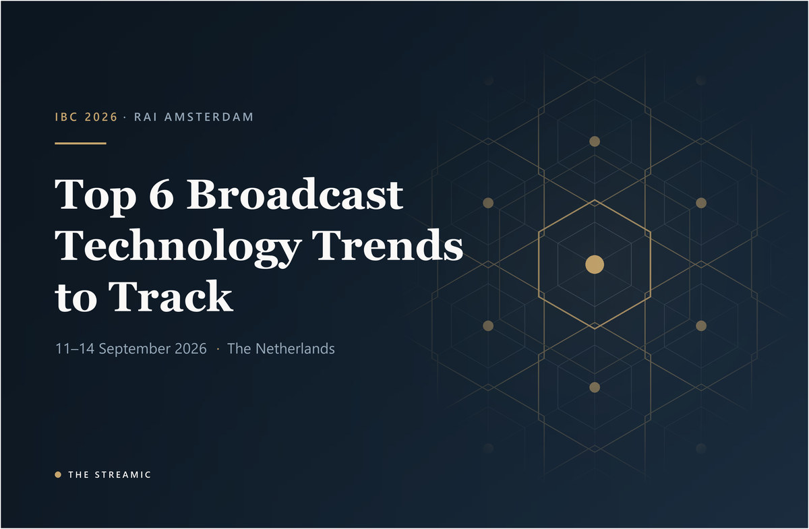

IBC Amsterdam 2026 Preview
IBC 2026: Top 6 Broadcast Technology Trends to Track
A concise pre-show guide to the developments most likely to affect broadcasters, digital channels, Media IT and post-production.

Editorial status: Pre-show analysis based on official IBC information available on 22 August 2026. IBC2026 runs from 11 to 14 September 2026. Announced demonstrations and claims still require validation at the show.
IBC2026’s most important question is no longer whether AI will affect broadcasting. It is where AI can deliver measurable value without weakening trust, control or resilience. These six trends provide a practical framework for visitors and non-visitors tracking the Amsterdam show.
Top 6 IBC 2026 broadcast technology trends
1. Agentic AI becomes a workflow layer, not another point tool
IBC2026 discussions are shifting from isolated AI features toward agents that can coordinate search, metadata, versioning, scheduling and publishing. The important change is orchestration across existing systems, with human judgement retained for editorial and compliance decisions.
Why it matters: Look for role-based permissions, traceable actions, rollback, confidence scores and clear escalation to an operator. An agent that cannot explain what it changed creates a support and governance problem.
Sources: AI-native media operations Smart Stories agentic production ecosystem
2. Newsrooms move from broadcast-first to platform-native publishing
The IBC agenda frames digital news as a real-time supply-chain challenge. A single bulletin or VOD asset may need rapid segmentation, vertical reframing, captions, summaries, metadata and delivery to web, OTT, FAST and social platforms.
Why it matters: The useful solution will preserve corrections, embargoes, brand rules and approval stages across every output. Speed alone is not enough if platforms receive inconsistent facts or versions.
Sources: Platform-Native News in the Agentic AI Era IBC2026 Conference overview
3. Live sport becomes personalised, vertical and data-driven
Sports sessions and nominated projects point to AI-assisted multicamera production, automated replay, mobile-first vertical feeds, companion experiences and personalised versions of the same event. These tools could expand coverage without matching growth in production headcount.
Why it matters: Test end-to-end latency, graphics and scoreboard safety, rights restrictions, data accuracy and the operator’s ability to intervene instantly. Personalisation must not weaken the reliability of the main broadcast.
Sources: AI-Powered Live Sports for the Mobile Generation IBC2026 Innovation Awards nominees
4. AI-native production reaches editing, VFX and media asset management
IBC technical papers will examine AI-assisted VFX under real production constraints and models that understand the structural intent of an edit. On the show floor, AI rough cuts, visual search, transcription and semantic retrieval are moving closer to everyday post-production.
Why it matters: Judge the complete hand-off: source security, timecode accuracy, timeline export, relinking, version history, rights metadata and the time editors spend repairing AI output.
Sources: AI Production and Software Tools Eddie AI exhibitor listing Projective exhibitor listing
5. Provenance, rights and trust become core infrastructure
IBC’s conference themes include authenticity and protection against deepfakes and misinformation. AI-native content discussions also highlight C2PA provenance, rights management and governance. These controls must travel with media rather than exist in a separate spreadsheet or policy document.
Why it matters: Ask how origin, consent, transformations, model use and publishing rights are recorded. Generated or altered content should remain identifiable after transcoding, clipping and distribution.
6. Sovereign cloud and interoperability challenge platform lock-in
Cloud adoption is now being evaluated alongside jurisdiction, portability and resilience. IBC sessions include sovereign media supply chains, hybrid environments and federated retrieval intended to connect archives and production tools without forcing every asset into one platform.
Why it matters: Compare identity integration, observability, egress, recovery objectives, data location and exit options. A lower initial cloud price can hide expensive operational dependence.
Frequently asked questions
What is the biggest technology trend at IBC 2026?
Agentic AI is the strongest cross-industry theme because it connects multiple production and distribution tasks rather than automating only one feature.
What should broadcasters ask AI vendors?
Ask for measurable workflow results, permissions, audit trails, provenance, failure handling, integration requirements and a clear human approval model.
When and where is IBC 2026?
IBC2026 runs from 11 to 14 September 2026 at RAI Amsterdam in the Netherlands.
Independent pre-show editorial guide. Vendor and project claims should be tested against real workflows before procurement.